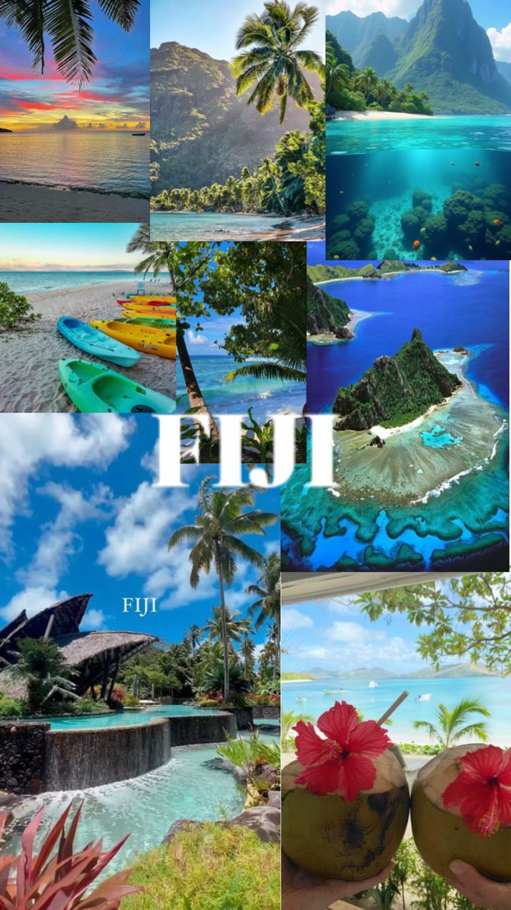
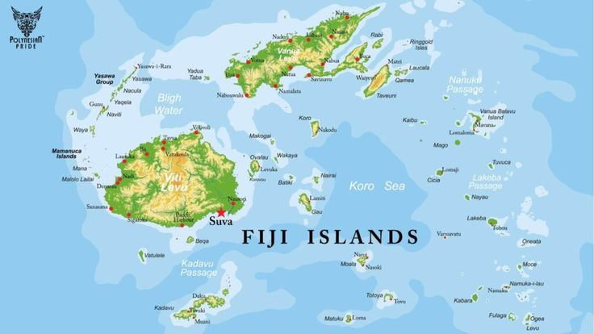

The Heart of the South Pacific

Fiji is a beautiful island country in the South Pacific. It is known for its friendly people, blue ocean, green mountains, and strong culture. This website shares some of the things that make Fiji special. Diversity: Fiji has a rich, multicultural society. The population (around 900,000) is split roughly between indigenous Fijians and Indo-Fijians (descendants of laborers brought by the British in the 1800s)
Reference: Tourism Fiji
Main Islands: The population is heavily concentrated on the two largest islands, Viti Levu (home to the capital, Suva, and the main international airport in Nadi) and Vanua Levu.
